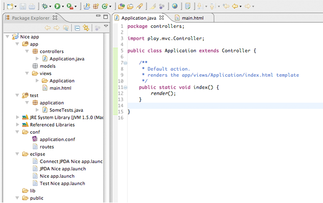
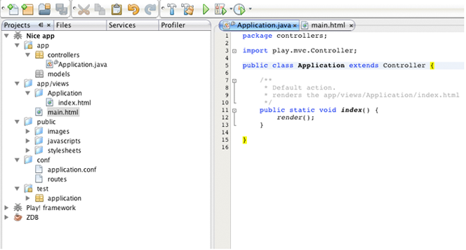
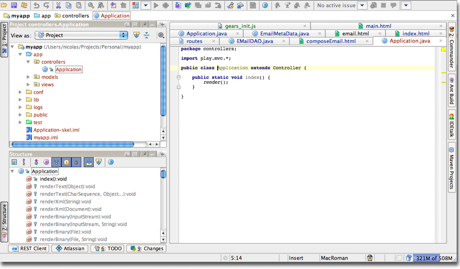
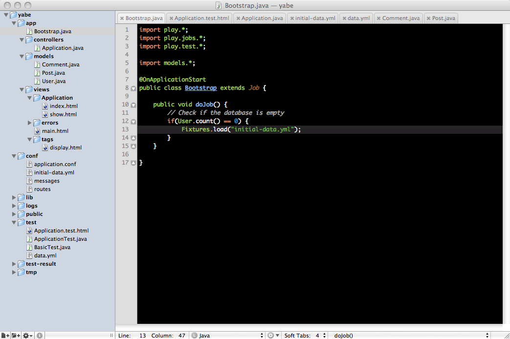

Setting-up your preferred IDE
Working with Play is easy. You don’t even need a sophisticated IDE as Play compiles and refreshes the modifications you make to your source files automatically. So you can easily work using a simple text editor.
However, using a modern Java IDE provides cool productivity features like auto-completion, on-the-fly compilation, assisted refactoring and debugging. Play supports the NetBeans, IntelliJ IDEA and Eclipse platforms.
Eclipse
Generate configuration
Play provides a command to simplify Eclipse configuration. To transform a Play application into a working Eclipse project, use the eclipsify command:
# play eclipsify myApp
You then need to import the application into your Workspace with the File/Import/General/Existing project… menu.

If you make any important changes to your application, such as changing the classpath, use eclipsify again to regenerate the configuration files.
Do not commit Eclipse configuration files when you work in a team!
The generated configuration files contain absolute references to your framework installation. These are specific to your own installation. When you work in a team, each developer must keep his Eclipse configuration files private.
Launchers
The eclipsify command generates several launchers for the application. For example, running eclipsify on an application called Nice app (see screen shot above) will create the following launchers in the eclipse/ folder:
Nice app.launch- the main launcher, equivalent to theplay testcommand, which you can use to run your application by right-clicking it and selecting Run As > Nice appTest Nice app.launch- the test launcher, equivalent to theplay testcommand, which you also run by right-clicking it and selecting Run As > Test Nice appConnect JPDA Nice app.launch- the JPDA debugging session connector, which you can use to connect the Eclipse debugger to an already-running Play instance and start a debugging session, by right-clicking the launch file and selecting Debug As > Connect JPDA Nice app. Stopping the debugging session will not stop the server.
Play Eclipse plug-in
Additionally, Play comes with an Eclipse plug-in that provides editors for HTML view templates, application.conf and the routes file.
To install, copy the JAR file from $PLAY_HOME/support/eclipse to $ECLIPSE_HOME/dropins.
NetBeans
Play provides a command to simplify NetBeans configuration. To transform an existing application to a valid NetBeans project, use the netbeansify command:
# play netbeansify myApp
Then you can just open the application as a NetBeans project.

Use the standard Run button to start the application. When the application is started you can attach a debugging session at any time using the Debug button. Stopping the debugging session doesn’t stop the server.
If you make any important change to your application such as changing the classpath, use netbeansify again to regenerate the configuration files.
Do not commit the nbproject/ directory when you work in a team!
The generated configuration files contains absolute references to your framework installation. These are specific to your own installation. When you work in a team on the same application, each developer must keep his NetBeans configuration files private.
IntelliJ IDEA
Play provides a command to simplify IntelliJ IDEA configuration. To transform an existing application to a valid IntelliJ IDEA module, use the idealize command:
# play idealize myApp
To create a single module project, do the following in IntelliJ IDEA.
- On the command line, use the
play newcommand to create the Play project. - On the command line, use the
play idealizecommand to create an IntelliJ IDEA module. - In IntelliJ IDEA, on the File menu, select Open Project… and select the generated
.iprfile.

To add a run configuration:
- In IntelliJ IDEA, on the Run menu, select Edit Configurations.
- Right-click on Application under Defaults and select Add New Configuration.
- Under Main class, enter
play.server.Server. - Under VM parameters, enter
-Dapplication.path=".". - Under Working directory, enter the application path.
To run Play in test mode in IntelliJ:
- Edit the run configuration and in VM parameters, append -Dplay.id=test.
- Right-click on your module and select Open Module Settings.
- Select the Dependencies tab.
- Click Add… and select Single-Entry Module Library.
- Select
$PLAY_HOME/modules/testrunner/lib/play-testrunner.jarand click OK.
Do not commit the .iml files when you work in a team!
The generated configuration files contains absolute references to your framework installation. These are specific to your own installation. When you work in a team on the same application, each developer must keep his IntelliJ IDEA configuration files private.
Textmate
Install the Textmate bundle provided at $PLAY_HOME/support/textmate.zip to enable syntax coloring and auto-completion. The bundle also eases navigation between controllers and views.

Vim
Inspired by Textmate, the snipMate plug-in provides keyword auto-completion in Vim. Play provides snippets files for HTML and Java: to use them, install snipMate and copy $PLAY_HOME/support/vim/*.snippets to ~/.vim/snippets/.
Custom configuration
As Play applications are standard Java applications, you don’t need a specific plug-in to work with your preferred editor. This, however, requires a little bit of knowledge of how Play works.
Classpath settings
A Play application classpath is built as follows (in this order):
- The
conf/directory for the application - The
$PLAY_PATH/framework/play-$version.jar - All JAR files found in your application’s
lib/directory - All JAR files found in the
$PLAY_PATH/framework/lib/directory
Tip
If you have any modules enabled, you will need to add all modules’ libraries (from the $module/lib/ directory) to the classpath as well.
Main class to run
To start a Play application, just run the play.server.Server class. Play uses the "application.path" system property to locate the application to run. Typically you pass this value with:
java -Dapplication.path="/app/path"…
Java agent
To enable HotSwap reloading you have to load a Java agent packaged in the play.jar library. Typically like this:
java -javaagent:"$PLAY_PATH/framework/play.jar" …
It’s not required, but will speed-up class reloading when it is possible.
Debugging issues
Play automatically reloads Java classes when the Java sources are modified. However as Java does not fully support class reloading, the JDPA debugger can easily get confused: breakpoint submission may fail or the debugger may stop on the wrong line when you step into the code.
To avoid this behavior, a better way is to start a fresh debugging session after a code modification. Luckily, JPDA supports the ability to connect and disconnect the debugger at any time without restarting the JVM.
So the correct workflow for debugging is:
- Make changes to your source code.
- Refresh the browser to see the results. (At this time Play will reload your code modifications and redefine classes in the JVM.)
- If something goes wrong and you need to debug, start a new debug session.
- Debug and correct your code.
- Disconnect the debugger.
By using this work-flow you will always have a debugger synchronized with the code loaded in the JVM.
Next: ‘Hello World’ tutorial.